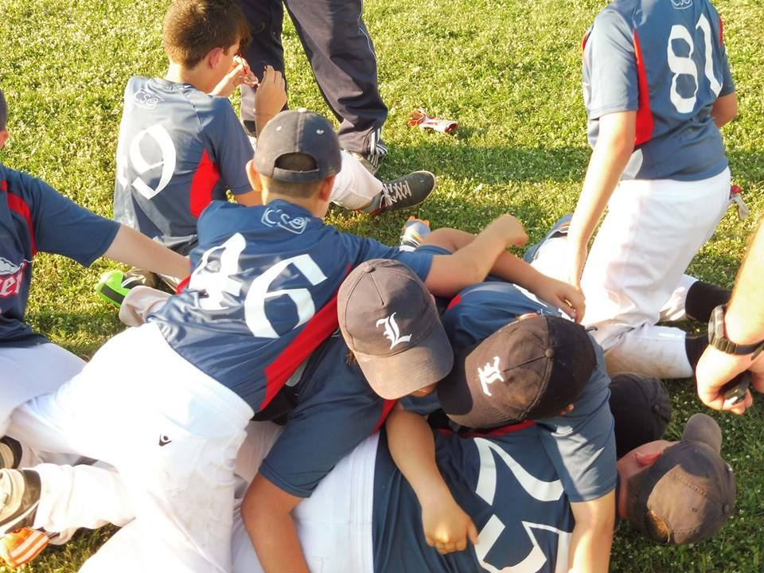
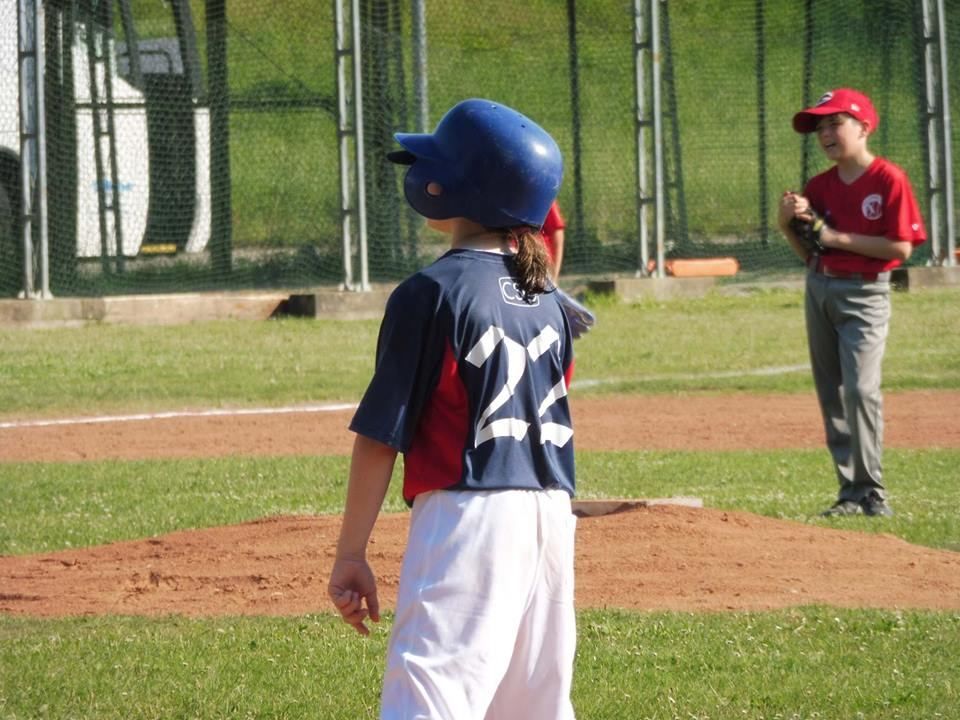

Under 12 – Lancers – Wild Rabbit Grosseto 18-3
In un caldo pomeriggio di fine maggio i lancerini ottengono il massimo risultato con il minimo sindacale in fatto di sforzo. I maremmani offrono una resistenza debole, soprattutto in quanto a lanciatori, pertanto già dopo le prime battute si intuisce quale sarà l’esito della gara. E allora l’attenzione si sposta sul piacevole epilogo della serata, a base di salsicce e wurstel, nonché sulla squisita torta per festeggiare il dodicesimo compleanno di Lorenzo Sarubbi. Auguri anche dal vostro affezionato “giornalista”!
Questi i protagonisti della gara: Matteo Angelini, Daniele Gerges, Lorenzo Gianrossi, Alberto Lopez, Paolo Manetti, Silvia Onori, Gabriele Paoli, Alessio Pellegrini, Lorenzo Sarubbi, Lorenzo Scarpulla, Alfredo Signorini, Noemi Vecchi.
Primo inning 3-0. Lanciatore Lopez, ricevitore Pellegrini. Lopez è impeccabile: tre battitori e tre eliminati senza neanche arrivare in base. Gli autori dei punti lastrigiani portano le firme di Lopez, Pellegrini e Manetti, tutti giunti in prima base per 4 balls, percorrono il diamante sfruttando dei lanci non recuperati dal ricevitore.
Secondo inning 4-1. Lanciatore Lopez, ricevitore Pellegrini. Il n° 52 va in prima base per 4 balls e poi riesce a tornare a casa base. Il n° 46 batte la prima palla della gara ma Menetti raccoglie e la passa a Scarpulla che lo elimina. Altri due eliminati per merito di Lopez portano al cambio. Sarubbi e Gianrossi tornano a casa base dopo essere giunti in prima base per 4 balls mentre Lopez e Paoli battono e poi sfruttano un paio di ricezioni errate, una delle quali consente a Lopez di rubare 3 basi tutte insieme. Paoli approfitta di una gran battuta di Scarpulla, che in questo finale di stagione fa onore al suo soprannome, andando a punto.

Terzo inning 4-0. Lanciatore Lopez, ricevitore Pellegrini. Tre avversari battono tre palle di Lopez ma nessuno di loro giunge in prima base: il primo e il terzo vengono eliminati dal duo Signorini-Scarpulla, il secondo direttamente da Scarpulla. Pellegrini, Manetti e Gianrossi vanno a punto dopo aver conquistato la prima base per base-ball, intervallati da Signorini che invece batte la palla. Da rilevare che Manetti e Signorini transitano da casa base in seguito alla stessa errata gestione di palla dei maremmani in difesa.
Quarto inning 3-0. Lanciatore Paoli, ricevitore Scarpulla. Anche Paoli riesce nell’impresa di eliminare tre battitori su tre: i primi due per strikes, l’ultimo batte ma lo stesso Paoli raccoglie e passa in prima base a Manetti. Gli zero punti realizzati degli ospiti sanciscono la matematica vittoria dei Lancers già a metà del quarto inning. Paoli, Scarpulla e Pellegrini sono gli autori dei punti, tutti dopo essere stati promossi in prima base per 4 balls passano di base in base sfruttando le incertezze in difesa degli avversari.
Quinto inning 4-0. Lanciatore Pellegrini, ricevitore Scarpulla. Due gli eliminati dai lanci di Pellegrini e uno da Scarpulla che riprende una battuta e passa a Manetti in prima. Angelini, Vecchi, Lopez e Paoli vanno in prima base e poi, di base in base, tornano alla partenza. Gli ultimi due passano dal piatto di casa base in occasione della stessa palla.
Quinto inning 0-2. Lanciatore Scarpulla, ricevitore Lopez. I numeri 41 e 62, rispettivamente promossi in prima base per 4 balls e per essere colpito dalla palla, vanno a punto. Il n° 52 batte ma Pellegrini raccoglie e lancia a Manetti in prima base. L’ultima palla coincide anche con l’azione più bella della gara con una doppia eliminazione: il n° 46 batte ma Manetti in prima raccoglie e lancia subito a casa base dove Lopez elimina il n° 22 che, dalla terza base, tentava di realizzare il quarto punto. Inutile la fase di attacco dei padroni di casa, non giocata.